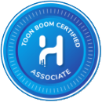
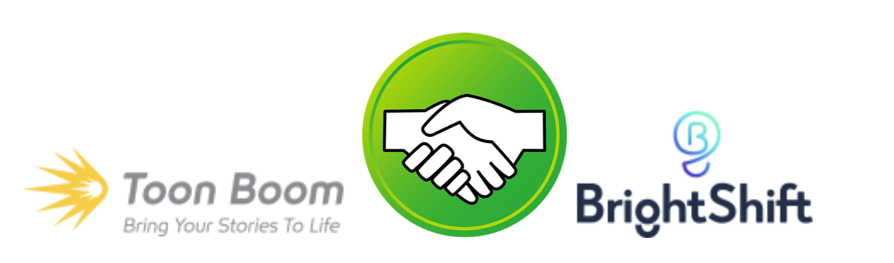

About Toon Boom Associate Certification Process for Harmony Premium
“Education is the most powerful weapon which you can use to change the world.” - Nelson Mandela
Learn how to create amazing animation today, become the professional animators and storyboard artists of tomorrow.
The Toon Boom Associates Certification is designed to set the industry standard by establishing a solid foundation in storyboarding and animation with Storyboard Pro and Harmony. The multiple-choice style exam is based on theory and delivers a sophisticated level of knowledge and insight into one of today’s most exciting industries.
Toon Boom Associate Certification Process Harmony Premium
“Creativity is intelligence having fun.” - Albert Einstein
Ensuring students have access to adequate learning materials so course objectives can easily be met is paramount. We’ve made available and encourage you to use all of our learning resources for optimal results. Below you’ll find a go-to-guide of practical learning and study solutions.
Learning Objectives & Study Resource Alignment Guide
Make progress and keep learning on track with our goto study and alignment guide for Storyboard Pro. All learning objectives are linked to specific modules in our learn portal. At any time, the module and the course number or name can be typed in the Learn Portal search toolbar to retrieve the study contents.
Learn Portal: learn.toonboom.com
Our learn portal is a gateway tool with access to numerous courses, videos, and documentation all designed to facilitate teaching and learning. We invite you to take your students along our ready-made certification journey with over 47 hours of aligned learning content.
Webinars:
Explore our database of webinar videos that include everything from tutorials, tips and tricks, how-to guides, and everything in between. Check out a few of our suggestions and favorites below.
- Drawing in Toon Boom Harmony Premium
- Creating a Very Simple Cut-Out Rig in Harmony Essentials
- Build a Harmony Premium Scene from Scratch
- Learn about Vector Drawing Tools in Storyboard Pro
- Creative Entrepreneurship Webinar with Big Jump Productions Founder Cory Morrison
Docs:
A portal where you can access all the essential documentation about our software. Explore the useful links below for some additional information and support.
- www.toonboom.com/
- www.toonboom.com/community
- www.discordapp.com/invite/syAjy4H
- https://www.toonboom.com/category/blog
- https://animationfromeveryangle.com
Toon Boom Associate Certification Process Harmony Premium

How We Test
Toon Boom has teamed up with Brightshift as our trusted platform for all exam testing. BrightShift is an innovative and collaborative online learning platform with a powerful testing environment. They combine a compelling student experience with a flexible and efficient teaching environment that goes beyond just being a testing platform. To see what more Brighshift can do for you, please visit brightshiftinc.com/features.

Once exams are purchased, you will be given your login credentials to access your Brightshift portal and set up the 3 managing roles:
- Administrator :
- The administrator will be the individual responsible for overseeing and managing the platform. If you’re an instructor or a proctor, you’ll be able to retrieve your login credentials from your administrator.
- Instructor :
- Instructors have access to numerous features. They can set up rosters, add students, enable tests, and assign tests. Instructors will have access to the exam results and the ability to distribute certificates.
- Proctor :
- The proctor is the testing gatekeeper. Only the proctor has the ability to unlock tests and monitor students while testing. The proctor has the ability to remotely proctor using any video conferencing of choice. For more information regarding this process please contact us.
Creative Entrepreneurship Webinar with Big Jump Productions Founder Cory Morrison